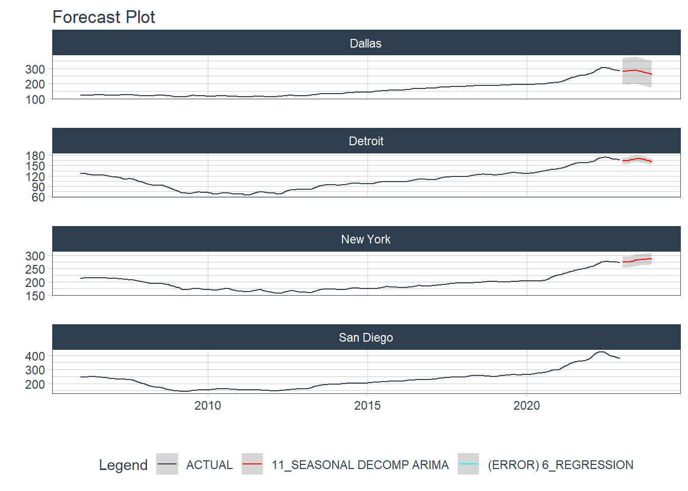
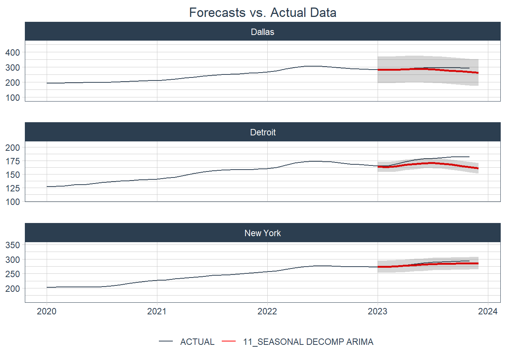

Forecasting with {modeltime} - Part V
Selecting the best model for each city
This is the final (planned) post for this series on the modeltime (Dancho 2023) package I will identify the best model to forecast the Case-Shiller Home Price Index using an interative modeling process. The models to work with will be the 11 models that I identified through the global modeling process in Forecasting with {modeltime} - Part IV. Additionally I’ll be using parallel (2023) for parallel processing, tidymodels (Kuhn and Wickham 2020) for a modeling framework, tidyverse (Wickham et al. 2019) for data wrangling and visualization, and gt (Iannone et al. 2024) for table output.
Below is a look at the names of the model specifications from the last post.
| .model_desc |
|---|
| BASE_REC_ETS_DEFAULT |
| BASE_REC_ARIMA_DEFAULT |
| BASE_REC_ARIMA_SPEC2 |
| BASE_REC_ETS_SPEC14 |
| BASE_REC_ETS_SPEC6 |
| DEMOG_REC_ARIMA_SPEC1 |
| DEMOG_REC_ARIMA_SPEC3 |
| NNET_REC_NNET_SPEC22 |
| NNET_REC_NNET_SPEC9 |
| NNET_REC_NNET_SPEC12 |
| BASE_REC_STLM_SPEC3 |
And this is what the workflowset object looked like.
# A workflow set/tibble: 90 × 4
wflow_id info option result
<chr> <list> <list> <list>
1 base_rec_arima_default <tibble [1 × 4]> <opts[0]> <list [0]>
2 base_rec_arima_spec1 <tibble [1 × 4]> <opts[0]> <list [0]>
3 base_rec_arima_spec2 <tibble [1 × 4]> <opts[0]> <list [0]>
4 base_rec_arima_spec3 <tibble [1 × 4]> <opts[0]> <list [0]>
5 base_rec_arima_spec4 <tibble [1 × 4]> <opts[0]> <list [0]>
6 econ_rec_arima_default <tibble [1 × 4]> <opts[0]> <list [0]>
7 econ_rec_arima_spec1 <tibble [1 × 4]> <opts[0]> <list [0]>
8 econ_rec_arima_spec2 <tibble [1 × 4]> <opts[0]> <list [0]>
9 econ_rec_arima_spec3 <tibble [1 × 4]> <opts[0]> <list [0]>
10 econ_rec_arima_spec4 <tibble [1 × 4]> <opts[0]> <list [0]>
# ℹ 80 more rowsFiltering workflows
I’ll first filter the set of workflows to the 11 that I want to keep.
These are all of the necessary workflows including recipes and model specifications.
Splitting the data
Next up is creating the data split object. This is a different set of functions than what I used to split the data for the global modeling process. In this workflow the future dates get added for each city up front.
Code
# A tibble: 4 × 4
city .actual_data .future_data .splits
<chr> <list> <list> <list>
1 Dallas <tibble [204 × 15]> <tibble [12 × 15]> <split [180|24]>
2 Detroit <tibble [204 × 15]> <tibble [12 × 15]> <split [180|24]>
3 New York <tibble [204 × 15]> <tibble [12 × 15]> <split [180|24]>
4 San Diego <tibble [204 × 15]> <tibble [12 × 15]> <split [180|24]>With these two objects prepared I can now fit the models iteratively for each city.
Fit models
I’ll first prepare a parallel processing cluster and set a random seed for each node then fit the models.
modeltime_nested_fit() requires that models be specified individually rather than as a workflowset object.
Code
socket cluster with 11 nodes on host 'localhost'[[1]]
NULL
[[2]]
NULL
[[3]]
NULL
[[4]]
NULL
[[5]]
NULL
[[6]]
NULL
[[7]]
NULL
[[8]]
NULL
[[9]]
NULL
[[10]]
NULL
[[11]]
NULLCode
hpi_wflowset <- modeltime_nested_fit(
econ_splits,
hpi_global_wfset |> extract_workflow(mod_ids[1]),
hpi_global_wfset |> extract_workflow(mod_ids[2]),
hpi_global_wfset |> extract_workflow(mod_ids[3]),
hpi_global_wfset |> extract_workflow(mod_ids[4]),
hpi_global_wfset |> extract_workflow(mod_ids[5]),
hpi_global_wfset |> extract_workflow(mod_ids[6]),
hpi_global_wfset |> extract_workflow(mod_ids[7]),
hpi_global_wfset |> extract_workflow(mod_ids[8]),
hpi_global_wfset |> extract_workflow(mod_ids[9]),
hpi_global_wfset |> extract_workflow(mod_ids[10]),
hpi_global_wfset |> extract_workflow(mod_ids[11]),
control = control_nested_fit(verbose = TRUE, allow_par = TRUE)
)
stopCluster(cl)
rm(cl)
hpi_wflowset# Nested Modeltime Table
# A tibble: 4 × 5
city .actual_data .future_data .splits .modeltime_tables
<chr> <list> <list> <list> <list>
1 Dallas <tibble [204 × 15]> <tibble> <split [180|24]> <mdl_tm_t>
2 Detroit <tibble [204 × 15]> <tibble> <split [180|24]> <mdl_tm_t>
3 New York <tibble [204 × 15]> <tibble> <split [180|24]> <mdl_tm_t>
4 San Diego <tibble [204 × 15]> <tibble> <split [180|24]> <mdl_tm_t> Notice that this object is grouped by city whereas the corresponding object for the global modeling process is listed by model. This happens because modeltime_nested_fit() calls a split object that has the data grouped by ID already. All of the functions in the modeltime Nested Forecasting workflow geared toward doing things at the level of the ID variable, which is “city” in this case. Each row contains a mdl_time_tbl object in the “.modeltime_tables” column for each row which has one row for each model that was fit to the data of the ID in that row. This mdl_time_tbl object contains calibration data, which gets created during the iterative modeling process. Below is an example.
# Modeltime Table
# A tibble: 11 × 5
.model_id .model .model_desc .type .calibration_data
<int> <named list> <chr> <chr> <list>
1 1 <workflow> ETSAADN Test <tibble [24 × 4]>
2 2 <workflow> ARIMA Test <tibble [24 × 4]>
3 3 <workflow> ARIMA Test <tibble [24 × 4]>
4 4 <workflow> ETSAADA Test <tibble [24 × 4]>
5 5 <workflow> ETSAADA Test <tibble [24 × 4]>
6 6 <workflow> REGRESSION Test <tibble [24 × 4]>
7 7 <workflow> REGRESSION Test <tibble [24 × 4]>
8 8 <NULL> NULL <NA> <lgl [1]>
9 9 <NULL> NULL <NA> <lgl [1]>
10 10 <NULL> NULL <NA> <lgl [1]>
11 11 <workflow> SEASONAL DECOMP ARIMA Test <tibble [24 × 4]>Selecting the best models
{modeltime} has the modeltime_nested_select_best() for selecting the best model for each ID in a nested model table. It requires the specification of a metric for determining which model is “best”. As before, I’ll use the Scaled Mean Average Percent Error (SMAPE).
Code
# Nested Modeltime Table
# A tibble: 4 × 5
city .actual_data .future_data .splits .modeltime_tables
<chr> <list> <list> <list> <list>
1 Dallas <tibble [204 × 15]> <tibble> <split [180|24]> <mdl_tm_t [1 × 5]>
2 Detroit <tibble [204 × 15]> <tibble> <split [180|24]> <mdl_tm_t [1 × 5]>
3 New York <tibble [204 × 15]> <tibble> <split [180|24]> <mdl_tm_t [1 × 5]>
4 San Diego <tibble [204 × 15]> <tibble> <split [180|24]> <mdl_tm_t [1 × 5]>Notice that after selecting the best model it’s only the “.modeltime_tables” column that changes. It now contains a table with one single row corresponding to the model that yielded the best value of the selected metric.
View accuracy best models
One gets the accuracy from a nested modeltime table by using extract_nested_test_accuracy() . Interestingly, this function shows the accuracy of all models even if it’s run with the table of the “best” models. So below I’ll use group_by() to get the accuracy for the best model for each city.
Code
| Accuracy Table | |||||||||
|---|---|---|---|---|---|---|---|---|---|
| city | .model_id | .model_desc | .type | mae | mape | mase | smape | rmse | rsq |
| Dallas | 11 | SEASONAL DECOMP ARIMA | Test | 39.49 | 14.11 | 7.54 | 15.46 | 44.89 | 0.86 |
| Detroit | 11 | SEASONAL DECOMP ARIMA | Test | 4.16 | 2.56 | 2.37 | 2.59 | 4.80 | 0.86 |
| New York | 11 | SEASONAL DECOMP ARIMA | Test | 9.12 | 3.50 | 3.84 | 3.58 | 10.70 | 0.90 |
| San Diego | 6 | REGRESSION | Test | 30.77 | 8.19 | 4.36 | 7.75 | 35.89 | 0.29 |
Next are the forecasts against the test data.
Code
fcst_pal <- c(
"#2c3e50", "#FF0000", "#00FFFF", "#FFFF00", "#0000FF", "#00FF00",
"#FF00FF", "#FF8000", "#0080FF", "#80FF00", "#8000FF", "#00FF80",
"#FF0080"
)
hpi_best |>
extract_nested_test_forecast() |>
group_by(city) |>
plot_modeltime_forecast(.interactive = FALSE) +
scale_color_manual(values = fcst_pal)- 1
- Create a color palette for plotting.
For Dallas, Detroit, and New York the 11th model in the original workflow which is a Seasonal Decomposition ARIMA model and for San Diego it’s the 6th model which is just called “REGRESSION”. I’ll show the table of model names here here with a “model_num” column indicating model number.
| .model_desc | model_num |
|---|---|
| BASE_REC_ETS_DEFAULT | 1 |
| BASE_REC_ARIMA_DEFAULT | 2 |
| BASE_REC_ARIMA_SPEC2 | 3 |
| BASE_REC_ETS_SPEC14 | 4 |
| BASE_REC_ETS_SPEC6 | 5 |
| DEMOG_REC_ARIMA_SPEC1 | 6 |
| DEMOG_REC_ARIMA_SPEC3 | 7 |
| NNET_REC_NNET_SPEC22 | 8 |
| NNET_REC_NNET_SPEC9 | 9 |
| NNET_REC_NNET_SPEC12 | 10 |
| BASE_REC_STLM_SPEC3 | 11 |
We can see that the 11th model is an STLM model and the 6th model is the first ARIMA specification with the “DEMOG” recipe (this is the one that included economic and demographic covariates).
The plot for San Diego does not include a margin of error and it’s listed as having an error in the legend. This is something that can be traced to the calibration. First I’ll extract the “.modeltime_tables”.
# Modeltime Table
# A tibble: 11 × 5
.model_id .model .model_desc .type .calibration_data
<int> <named list> <chr> <chr> <list>
1 1 <workflow> ETSAADN Test <tibble [24 × 4]>
2 2 <workflow> ARIMA Test <tibble [24 × 4]>
3 3 <workflow> ARIMA Test <tibble [24 × 4]>
4 4 <workflow> ETSAADA Test <tibble [24 × 4]>
5 5 <workflow> ETSAADA Test <tibble [24 × 4]>
6 6 <workflow> REGRESSION Test <tibble [24 × 4]>
7 7 <workflow> REGRESSION Test <tibble [24 × 4]>
8 8 <NULL> NULL <NA> <lgl [1]>
9 9 <NULL> NULL <NA> <lgl [1]>
10 10 <NULL> NULL <NA> <lgl [1]>
11 11 <workflow> SEASONAL DECOMP ARIMA Test <tibble [24 × 4]>I can see that the 6th model does contain calibration data, so this isn’t the problem. Now I’ll extract the calibration data just for this model to see what’s going on.
Code
# A tibble: 24 × 4
date .actual .prediction .residuals
<date> <dbl> <dbl> <dbl>
1 2021-01-01 302. NA NA
2 2021-02-01 311. NA NA
3 2021-03-01 321. NA NA
4 2021-04-01 332. NA NA
5 2021-05-01 341. NA NA
6 2021-06-01 350. NA NA
7 2021-07-01 355. 409. -53.6
8 2021-08-01 357. 410. -53.2
9 2021-09-01 360. 412. -51.6
10 2021-10-01 364. 413. -48.8
# ℹ 14 more rowsGaaaahhhh! It’s the missing data created by the lags in the recipe for this model. It might be interesting to run this model again without those lags, but I’ll be happy just to know why there is no margin of error for this one. Interestingly, though, it looks like the STLM did a pretty good job with Detroit and New York.
Now it’s on to forecasting the future.
Forecasting future HPI
The first step in forecasting is re-fitting the models to the full data set including the test portion. I’ll do this with modeltime_nested_refit() . I’ll immediately use that refit object to plot the forecasts.
Code

It looks like the missing values due to the lags prevented the ARIMA from generating forecasts, but the other forecasts look quite believable and much better than the forecasts made by the global process.
Comparing forecasts to what really happened
I used data that ended in December 2022 because that’s the most recent data I had for some demographic variables. This isn’t a problem for the STLM since this model doesn’t rely on demographic covariates, but there is HPI data through September of 2023, and the forecasts go through December of 2023. So, here I’ll just get the HPI data for 2023 for Dallas, Detroit, and New York.
Code
case_shiller_ids <- fredr::fredr_series_search_text("Case-Shiller") |>
filter(
str_detect(
title,
"TX-Dallas|NY-New York|MI-Detroit Home Price Index"
),
seasonal_adjustment_short %in% "NSA",
frequency %in% "Monthly"
) |>
mutate(city = str_extract(title, "New York|Dallas|San Diego|Detroit")) |>
select(city, id)
# Get Case Shiller data for 2023
hpi_data <- case_shiller_ids |>
mutate(
data = map(
id,
\(x) fredr::fredr(
series_id = x,
observation_start = ymd("2020-01-01"),
observation_end = ymd("2023-12-31"),
frequency = "m"
)
)
) |>
select(-id) |>
unnest(data) |>
select(city, date, hpi = value)
hpi_data |>
pivot_wider(names_from = city, values_from = hpi) |>
filter(year(date) == 2023) |>
gt() |>
gt_bold_head()| date | Dallas | New York | Detroit |
|---|---|---|---|
| 2023-01-01 | 281.7092 | 272.8493 | 165.3712 |
| 2023-02-01 | 281.6864 | 271.9243 | 165.0817 |
| 2023-03-01 | 284.7053 | 274.9276 | 168.7419 |
| 2023-04-01 | 288.6548 | 278.5348 | 172.7052 |
| 2023-05-01 | 293.1761 | 283.2171 | 176.2015 |
| 2023-06-01 | 295.2387 | 286.5359 | 177.9996 |
| 2023-07-01 | 296.1252 | 289.0024 | 179.2959 |
| 2023-08-01 | 295.6140 | 290.5704 | 180.7211 |
| 2023-09-01 | 295.2280 | 292.3354 | 181.9622 |
| 2023-10-01 | 294.2782 | 293.4502 | 182.6364 |
| 2023-11-01 | 292.4071 | 294.2285 | 181.8668 |
Now I can make a table of accuracy statistics for these series.
Code
hpi_data |>
left_join(
hpi_refit |>
filter(!city %in% "San Diego") |>
extract_nested_future_forecast() |>
filter(.key %in% "prediction") |>
unite("model_name", .model_id, .model_desc) |>
select(!.key),
by = c("city", "date" = ".index")
) |>
group_nest(city) |>
mutate(
smape = map_dbl(
data,
\(x) smape(x, hpi, .value) |> pull(.estimate)
),
rmse = map_dbl(
data,
\(x) rmse(x, hpi, .value) |> pull(.estimate)
),
rsq = map_dbl(
data,
\(x) rsq(x, hpi, .value) |> pull(.estimate)
)
) |>
select(-data) |>
ungroup() |>
gt() |>
gt_bold_head()| city | smape | rmse | rsq |
|---|---|---|---|
| Dallas | 3.522232 | 13.336181 | 0.0272001 |
| Detroit | 5.161485 | 10.526957 | 0.2394261 |
| New York | 1.658322 | 5.643017 | 0.9973690 |
These are some pretty low (good) values of SMAPE. Let’s see what these look like in plots.
Code
hpi_data |>
mutate(model_name = "ACTUAL") |>
rename(.value = hpi) |>
bind_rows(
hpi_refit |>
extract_nested_future_forecast() |>
filter(.key %in% "prediction", !city %in% "San Diego") |>
unite("model_name", .model_id, .model_desc) |>
select(!.key) |>
rename(date = .index)
) |>
mutate(
model_name = fct_relevel(model_name, "ACTUAL"),
lwidth = if_else(model_name %in% "ACTUAL", 1, 2)
) |>
ggplot(aes(x = date, group = model_name, color = model_name)) +
geom_line(aes(y = .value, linewidth = lwidth)) +
geom_ribbon(aes(ymin = .conf_lo, ymax = .conf_hi), alpha = 0.2, color = NA) +
scale_color_manual(values = fcst_pal) +
scale_y_continuous(expand = c(0.5, 0.5)) +
scale_linewidth(range = c(0.5, 1)) +
facet_wrap(~ city, scales = "free_y", ncol = 1) +
labs(
color = NULL,
x = NULL,
y = NULL,
title = "Forecasts vs. Actual Data"
) +
guides(linewidth = "none") +
theme_timetk +
theme(plot.title = element_text(hjust = 0.5))
Not too bad! All three forecasts look like they were very close in the first few months of the forecast period, but started to underestimate later on.
This ends the series of planned posts on using modeltime with R. All in all this is a great package with all sorts of goodies for forecasting time series.